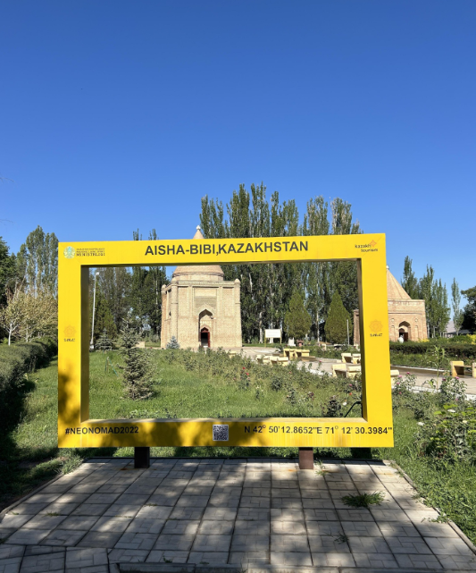
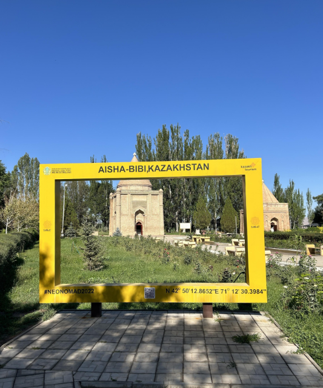

A legendary mausoleum of love and devotion
The Aisha-Bibi Mausoleum is one of Kazakhstan's most romantic landmarks, inspired by the legend of love between Aisha-Bibi and Karakhan. Built in the 12th century, it has become a timeless symbol of beauty, loyalty, and eternal love.
- Construction period: 12th century
- Material: Carved terracotta brick
- Architecture: Ornamental patterns in a unique style
- Cultural value: National heritage site
What to see?
- 🛠Elegant architecture of the mausoleum
- 🧱 Mosaic patterns and carvings
- 📷 Popular spot for wedding photography
How to get there?
📠Zhambyl Region, outskirts of Taraz
🚗 15–20 minutes by car from the city center
🚌 Accessible via city transport and guided tours
Visitor Information
⏰ Opening hours: Daily, from 08:00 to 18:00
🫠Entry fee: 500–1000 KZT (for adults)
🧕 Please respect the local dress code
The Aisha-Bibi Mausoleum is an architectural poem about eternal love that leaves a lasting impression on all who visit.
PHOTO

 
